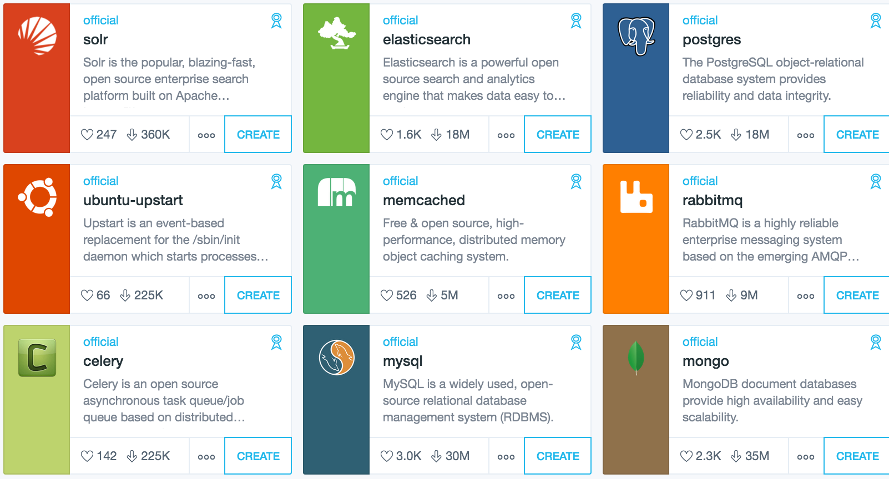

O mnie
- Lead Software Developer @ SMACC
- Machine Learning / AI for finanse departaments
- 12 years of experience
- Contact:
Docker

IT Now, DevOps, Data Scientists
Why?
- Your app, your tool with all dependencies
- Blazing fast deployments
- Lightweight virtualization
- Good cli
- Best way to start with new tech
- Great community
Docker
- Standard for Container Images
- Smart layered file system
- Simpler CLI for containers
From VM to Container

From VM to Container

From VM to Container

Containers
- Isolation of VM [*]
- Speed and simplicity of Process
- Docker - bring the tech for masses
- Docker - smart layered filesystem
* - ...
How to works
- Have your code ready to ship*
- Define your Dockerfile
- Build your Docker Image
[*] 12factor apps
How to works
- Ship it to a repository
- Run in production, staging, on your colleague's laptop
Dockerfile - simple
FROM python:3.6-slim-jessie
WORKDIR /app
ADD requirements.txt /app/requirements.txt
RUN apt-get update && \
apt-get install -qq locales-all poppler-utils imagemagick && \
rm -rf /var/lib/apt/lists/* && \
pip install -r /app/requirements.txt --cache-dir /pip-cache
ADD model /app/model
ADD . /app
ENTRYPOINT python /app/main.pyDockerfile - layers
Dockerfile - layers

Dockerfile - layers
- First deployment might be long
- Next one blazing fast!*
* depending which layer you upgrade
Commands
docker build -t my_ml_app .
docker start --name my_dev_app my_ml_app
# notebook
docker run -p 8888:8888 jupyter/scipy-notebookDependency hell no more
Docker Image has it all!
- Configs
- Libraries
- OS Libraries
pss..we move the hell to the build time
Perfect tech for sharing tools
Perfect tech for sharing tools
Deployment
- You run exactly what you build in your staging and production
- Blazing fast deployments
Amazing Docker-based deployment
- Kubernetes, Mesos make scaling easy.
- Managed Kubernetes is on Amazon, Google and Azure with Graphic Card support.
Easy to install and use
- You want to start with new tech
- No time to learn how to setup
- ...
- There must be docker that works our of the box!
Easy to install and use
Docker approach:- Docker must be runnable
- Docker must be configured out of the box
- Community put extra care to make it easy
Example
datascience-notebook
- Check docs
docker run -p 8888:8888 jupyter/scipy-notebook- 3 minutes later
- notebook ready to use
Best practise
Secure web server (nginx)
docker run -d \
-p 80:80 -p 443:443 \
-e 'DH_SIZE=512' \
marvambass/nginx-ssl-secureDelegate boring things. Fast start.
Alternative
- A lot of installation
- A lot of time to understand nuances
Simplier Integration Tests
- Need to test against mongodb?
- Run it with docker in your CI/CD or locally
Catalog
Kitematic
Docker
-------- ----------- ------------
| Data | | Developer | | Deployment |
| Scient | ------- | | ----> | |
-------- ----------- ------------
<------------- cut complexity ASAP -----------
all the artifacts should go to the component git
Much more ahead :)
- Building docker efficient - size
- Init processes inside Docker
- Where to put models?
- Testing and Validating
- 12factor apps
- Working with kubernetes
Much more ahead :)
- How to migrate to containers existing systems
- Security
Backup
Deployment
Kubernetes:
spec:
replicas: 2
template:
metadata:
labels:
app: mywebapp
role: mywebapp
tier: frontend
spec:
containers:
- name: mywebapp
image: eu.gcr.io/mycompany/mywebapp:v0.4.0
env:
- name: LISTEN_PORT
value: "80"
ports:
- containerPort: 80